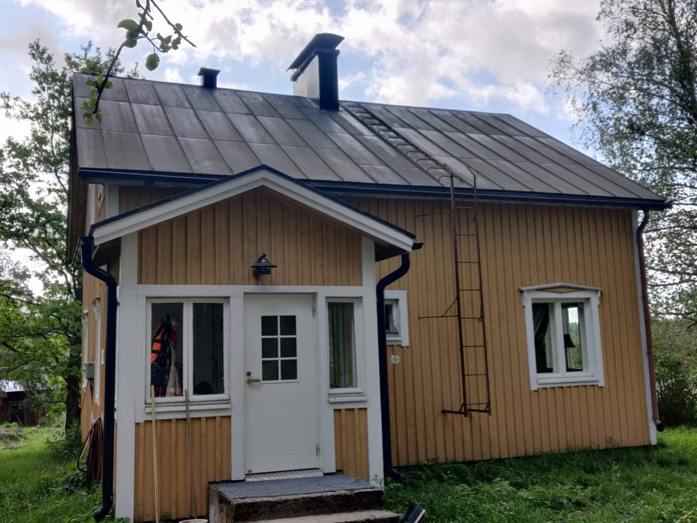
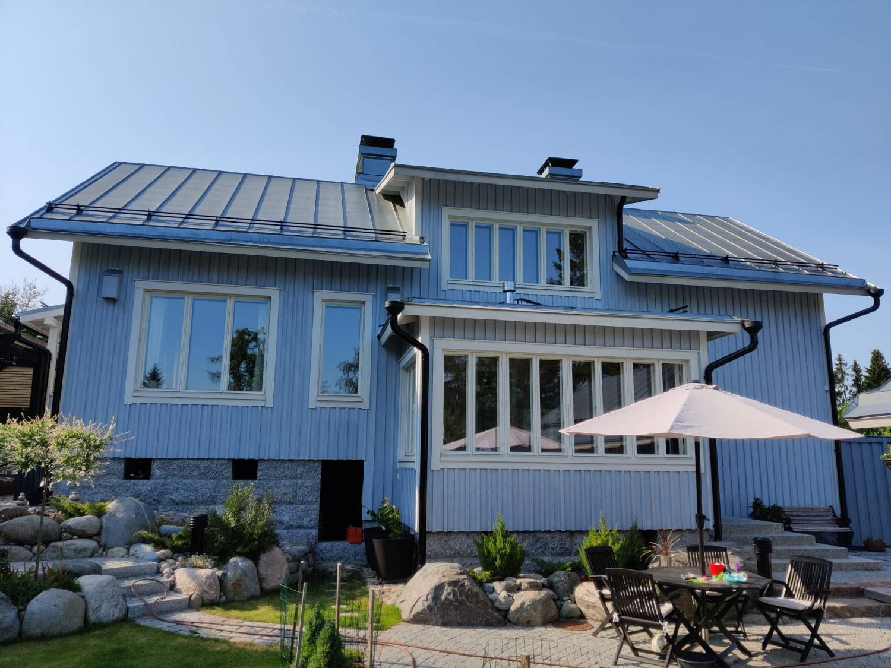

Perinteinen peltikattomaalaus on taitolaji!
Hyvin huollettu peltikatto kestää aikaa. Vanhimmat maalaamamme katot on tehty 1920- luvulla. Maalaamme uusia
konesaumakattoja sekä huoltomaalaamme vanhoja peltikattoja.
Olemme maalanneet peltikattoja vuodesta 2008. Asiakkaamme ovat pitäneet sekä tavastamme tehdä työtä että
lopputuloksesta.
Toteutamme mm. seuraavanlaisia maalaustöitä:
Pienkerrostalon peltikaton maalaus
Rivitalon peltikaton maalaus
Omakotitalon peltikaton maalaus.
Arvostatko käsityötä ja perinteisiä työmenetelmiä?
Niin mekin: tästä syystä maalaamme peltikatot vain ja ainoastaan sivellinmaalauksena .
Noudatamme peltikaton maalaustyössä Museoviraston laatimaa korjauskorttia .
Käytämme pääasiassa kotimaista Eskaro RK Peltikattomaalia (ent. Vihdin Maalitehdas).
Lue lisää valmistajan kotisivuilta .

Vanha peltikatto ennen maalausta
Peltikatto maalauksen jälkeen

Uusi hapettunut peltikatto ennen maalausta
Peltikatton maalauksen jälkeen
Kuinka paljon peltikaton maalaus maksaa?
Konesaumapeltikaton maalaus hinta n. 20-30 €/m2 sis. alv 24 %. Mitään yllätyskuluja ei sinulle tule.
Teemme kattomaalauksia Uudenmaan alueella ja pääkaupunkiseudulla (Espoo, Helsinki, Vantaa, Kauniainen,
Kirkkonummi, Tuusula, Järvenpää, Karkkila, Sipoo, Porvoo, Hyvinkää, Kerava, Pornainen, Mäntsälä, Loviisa,
Lapinjärvi, Askola, Myrskylä, Pukkila, Nurmijärvi, Vihti, Lohja, Siuntio, Karjaa, Raasepori, Hanko).
Tulevia ja toteutuneita kohteita:
Vuonna 2024 toteutettavia kohteita:
Tuusula: peltikaton maalaus, RK Peltikattomaali
Espoo: saumapeltikaton huoltomaalaus, RK Peltikattomaali
Lohja: omakotitalon peltikaton maalaus, RK Peltikattomaali
Sinun talosi katto. Laita yhteydenottolomakkeella viesti, niin saat tarjouksen!
Vuonna 2023 toteutettuja kohteita:
Kirkkonummi: peltikaton maalaus, RK Peltikattomaali
Lohja: rintamamiestalon saumapeltikaton maalaus, RK Peltikattomaali
Tuusula: omakotitalon peltikaton maalaus, RK Peltikattomaali
Espoo: omakotitalon konesaumapeltikaton ensimaalaus, RK Peltikattomaali
Vihti: omakotitalon peltikaton maalaus, RK Peltikattomaali
Helsinki: pienkerrostalon konesaumakaton ensimaalaus, RK Peltikattomaali
Helsinki: omakotitalon saumakaton ensimaalaus, RK Peltikattomaali
Helsinki: saumakatto, ensimaalaus, RK Peltikattomaali
Loviisa: konesaumatun peltikaton ensimaalaus, RK Peltikattomaali
Kirkkonummi: tiilikaton pesu ja suoja-ainekäsittely
Vuonna 2022 toteutettuja kohteita:
Lohja, saumakatto, huoltomaalaus, RK Peltikattomaali
Vantaa, omakotitalon peltikaton maalaus, RK Peltikattomaali
Lohja, omakotitalon sekä autotallin peltikaton maalaus, RK Peltikattomaali
Inkoo, konesaumatun peltikaton maalaus, RK Peltikattomaali
Nummi, 2 kpl peltikaton huoltomaalaus, RK Peltikattomaali
Nummi-Pusula, saumapeltikaton maalaus, RK Peltikattomaali
Helsinki, 2 kpl peltikaton maalaus, RK Peltikattomaali
Karjaa, 1920- luvun saumapeltikaton maalaus, RK Peltikattomaali
Karjaa, konesaumatun peltikaton maalaus, RK Peltikattomaali
Inkoo, 200 m2 konesaumakatto, maalaus. RK Peltikattomaali
Vuonna 2021 toteutettuja kohteita:
Tuusula, 150m2 saumapeltikatto, maalaus. RK Peltikattomaali
Espoo: 180 m2 peltikaton maalaus, RK Peltikattomaali
Inkoo: 110 m2 konesaumapeltikaton maalaus, RK Peltikattomaali
Vantaa: 100 m2 peltikaton huoltomaalaus, RK Peltikattomaali
Helsinki: n 150 m2 konesaumakaton maalaus, RK Peltikattomaali
Vuonna 2020 toteutettuja kohteita:
150 m2 peltikaton huoltomaalaus, RK Peltikattomaali
Karjaa, keskusta: 180 m2 konesaumapeltikaton maalaus, RK Peltikattomaali
Kirkkonummi, kahden okt-peltikaton paikkamaalaus
160 m2 konesaumapeltikatto, maalaus, RK Peltikattomaali
Vaasa: n. 250 m2 peltikaton maalaus (värin vaihto: harmaa -> musta)
Espoo, peltikaton pesu ja käsittely (Biocomb Puhdas katto)
Vuonna 2019 toteutettuja kohteita:
n. 380 m2 rivitalon peltikaton maalaus, RK Peltikattomaali
okt + at peltikattojen huoltomaalaus, yht. n. 400 m2
Vuonna 2018 toteutettuja kohteita:
1950-luvun käsinsaumatun peltikaton maalaus, n. 120 m2
rivitalon konesaumapeltikaton huoltomaalaus, n. 240 m2. RK Peltikattomaali
rintamamiestalon peltikaton maalaus, n. 120 m2. RK Peltikattomaali
tiilikaton pesu ja suoja-ainekäsittely, n. 150 m2
Kirkkonummi, peltikattojen maalausta n. 300 m2, Eskaro RK Peltikattomaali
Vuonna 2017 toteutettuja kohteita:
taloyhtiön kerrostalon peltikaton paikkamaalaus, n. 300 m2.
Kokkola, B&B Brinkin wanha pappila, konesaumakaton osan n. 80 m2 huoltomaalaus.
pohjalaistalon konesaumapeltikaton ensimaalaus, n. 280 m2.
pienkerrostalon katon huoltomaalaus n. 180 m2.
vanhan konesaumapeltikaton maalaus RK Peltikattomaalilla.
Kokkola, Haukioja: rintamamiestalon katon maalaus n. 120 m2, RK Peltikattomaali.
Vaasa, keskusta: kerrostalon katon huoltomaalaus n. 550 m2. Maalina RK Peltikattomaali.
Vaasa, keskusta: 1880-luvun talon peltikaton maalaus. Maalina Ottosson Järnmönja + Grafit.
Ruukki Classic-katon huoltopesu n. 120 m2
K19-profiilipeltikaton maalaus n. 120 m2 RK Peltikattomaali.
vanhan konesaumapeltikaton huoltomaalaus n. 250 m2, RK Peltikattomaali.
muut kohteet: 6 omakotitalon konesaumakaton huoltomaalaus, 1 konesaumakaton ensimaalaus.
Vuonna 2016 toteutettuja kohteita:
Vihti, Nummela: n 200 m2 konesaumakaton maalaus / RK Peltikattomaali
vanhan konesaumapeltikaton ensimaalaus n. 110 m2 (RK Peltikattomaali)
vanhan konesaumapeltikaton maalaus 110 m2, maalina RK Peltikattomaali.
vanhan konesaumapeltikaton maalaus n. 150 m2. Maalina RK Peltikattomaali.
vanhan K19-profiilipeltikaton maalaus 180 m2.
Vaasa, Hietalahden Villa: konesaumapeltikaton maalaus n. 250 m2. Maalina RK Peltikattomaali, sävy TVT0514
Grafiitinharmaa.
tiilikaton 180 m2 pesu ja pinnoitus.
tiilikaton pesu ja suojaus n. 120 m2.
muut kohteet: 5 omakotitalon konesaumapeltikattoa.
Vuonna 2015 toteutettuja kohteita:
peltikaton huoltomaalaus n. 170 m2
mansardikattoisen konesaumapeltikaton huoltomaalaus n. 125 m2
1700- luvun pihapiiriin kuuluvien konesaumakattojen ensimaalaus n. 250 m2 sekä päärakennuksen katon
paikkamaalaus n. 50 m2.
muut kohteet: 4 okt peltikattoa.
Vuonna 2014 maalasimme peltikattoja seuraavasti:
13 kpl, omakotitalojen peltikattoja ja mm. rivitalon saumapeltikaton huoltomaalaus n. 380 m2